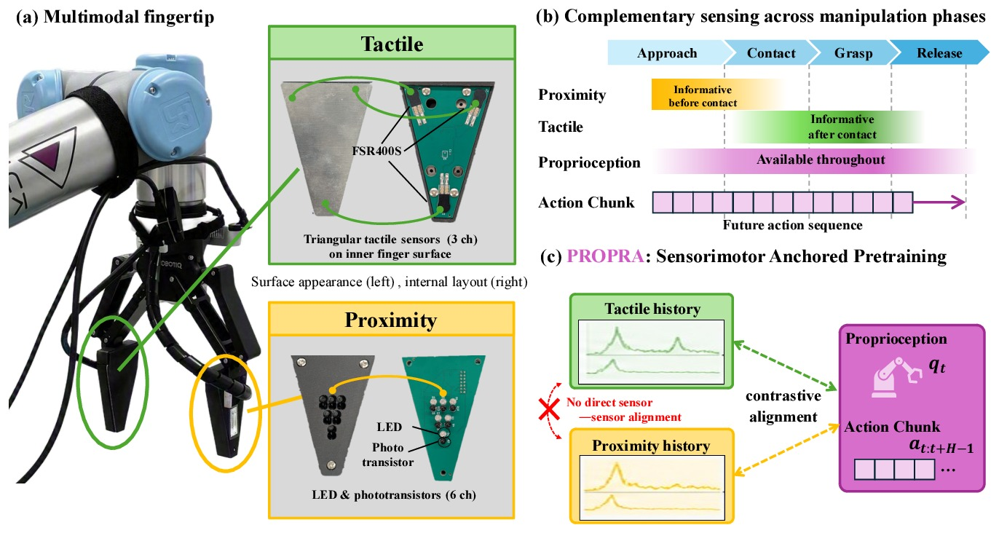
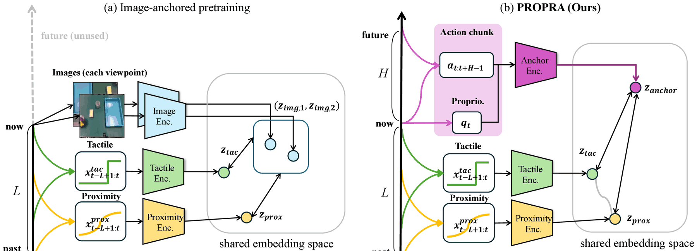
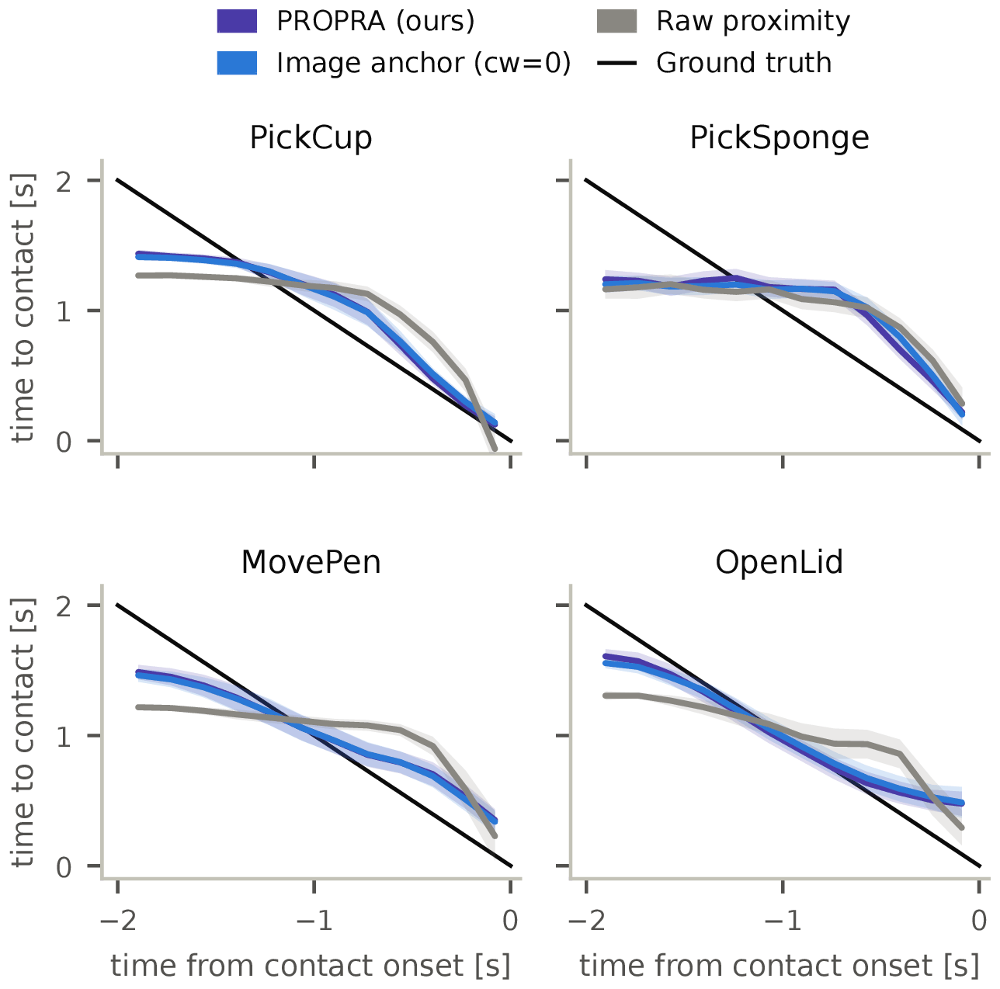
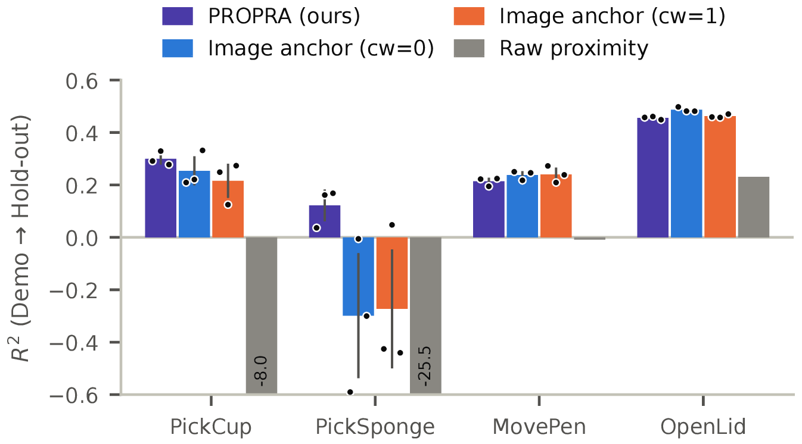

Under review
PROPRA
Self-Supervised Anchoring of Fingertip Sensing to Proprioception
and Proactive Actions for Robot Imitation Learning
Withheld for double-blind review.
Fingertip sensors speak only in bursts: proximity just before contact, tactile just after. PROPRA anchors each of them to something the robot always has — its current state and the actions it is about to execute.
Abstract
Robotic imitation learning often relies on external cameras, yet local interaction cues such as object proximity, contact onset, and grasp state are difficult to observe near the fingertips because of occlusion and limited temporal resolution. We study how to effectively incorporate complementary fingertip sensing into imitation learning using pressure-sensitive tactile and reflective proximity sensors, along with pretrained sensor encoders.
The two modalities provide information at different manipulation phases: proximity sensing is informative before contact, whereas tactile sensing becomes informative after contact. However, naively adding these signals to a policy does not consistently improve performance and can even underperform vision-only policies, suggesting that sparse, phase-dependent sensor signals are difficult to exploit from limited demonstrations.
We therefore propose a proprioception-anchored pretraining method, PROprioceptive-and-PRoactive Anchoring (PROPRA), which independently aligns each fingertip sensor history with proprioceptive and action segments. This provides a continuously available sensorimotor reference, allowing each sensor to be aligned independently during its informative phases.
Experiments on real-world manipulation tasks show that our pretraining method improves average success rates over vision-only policies and image-anchored pretraining baselines. Representation analysis further shows that it preserves richer information about pre-contact states, enabling more effective use of complementary fingertip sensing.
Two sensors, two moments

That is the catch: simply feeding these signals to the policy makes it worse than vision alone on two of four tasks, and pairing the two sensors in pretraining finds little to align — one of them is usually flat.
Method

So anchor each sensor to something the robot always has: its current state and the next ~1.7 s of actions. A contrastive loss aligns each 0.5 s sensor history with that anchor; the encoders then go into a diffusion policy and the anchor is dropped — no extra labels, no camera needed for pretraining.
Results
Four real-robot tasks, 50 demonstrations each. With PROPRA, the fingertip sensors pay off.
PickCup
PickSponge
MovePen
OpenLid
Avg.
Table
| Condition | PickCup | PickSponge | MovePen | OpenLid | Avg. |
|---|---|---|---|---|---|
| Vision only | 11.7 ± 7.6 | 35.0 ± 5.0 | 31.7 ± 10.4 | 43.3 ± 7.6 | 30.4 |
| Sensors, no pretraining | 61.7 ± 5.8 | 51.7 ± 12.6 | 20.0 ± 8.7 | 28.3 ± 15.3 | 40.4 |
| Image anchor | 75.0 ± 13.2 | 75.0 ± 13.2 | 60.0 ± 14.1 | 76.7 ± 12.6 | 71.7 |
| Image anchor + pair | 76.7 ± 7.6 | 71.7 ± 2.9 | 63.3 ± 2.9 | 76.7 ± 7.6 | 72.1 |
| PROPRA (ours) | 81.7 ± 5.8 | 81.7 ± 7.6 | 63.3 ± 5.8 | 73.3 ± 5.8 | 75.0 |


Video
PickCup PickSponge MovePen OpenLid